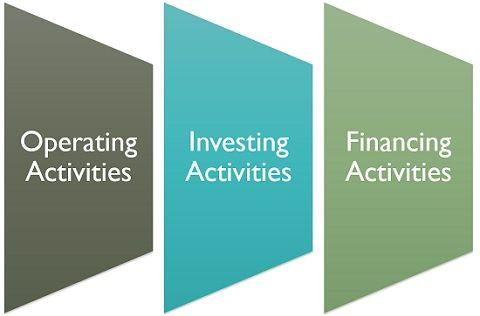

← Back to Index
Example 54 (Slide 191)
Example: Developing a Cash Flow Statement
A computerized machining center has been proposed for a small tool
manufacturing company. If the new system costing $125,000 is
installed, it will generate annual revenues of $100,000 and require
$20,000 in annual labor, $12,000 in annual material expenses,
and another $8000 in annual overhead (power and utility) expenses.
The automation facility would be classified as a 7-year MACRS property.
The company expects to phase out the facility at the end of 5 years, at
which time it will be sold for $50,000. The machining center will require
an investment of $23,331 in working capital (mainly spare parts
inventory), which will be recovered in full amount at the end of the project
life. Assume that $62,500 of the $125,000 paid for the investment is
obtained through a bank loan which is to be repaid in equal annual
installments at 10% interest over 5 years. The remaining $62,500 will
be provided by equity (for example, from retained earnings). Find the
year-by-year after-tax net cash flow for the project at a 40%
marginal tax rate based on the net income, and determine the after-tax
net present worth of the project at the company’s MARR of 15%.
191
?
